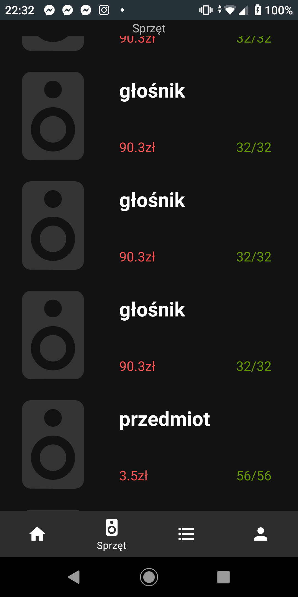
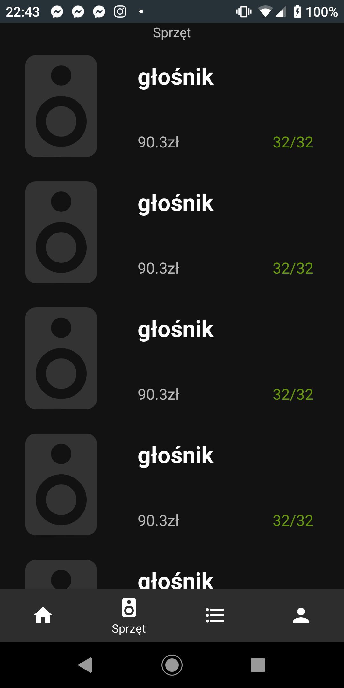

O projekcie
Projekt ten powstał na potrzeby kursu Aplikacje Mobilne. Za zadanie było wymyślić, zaprojektować i
zaprogamować
aplikację mobilną wykorzystując technologie prezentowane na wykładach.
Całość kursu skupiała się na pisaniu w języku kotlin aplikacji na system Android, tak też ta aplikacja używa
tych technologi.


O samej aplikacji
Nasza aplikacja służy do zarządzania wypożyczalnią sprzętu. Można w niej przechowywać dane swoich klientów,
informacje o ilości sprzętu w magazynie oraz zaplanowaych zleceniach.
Całość jest synchronizowana na biężąco między wszystkimi uzytkownikami z użyciem bazy danych czasu
rzeczywistego
Firebase. Ta usługa odpowiada też za autoryzajcę w aplikacji. Jeśli chodzi o wygląd i interfejs został on
zaprojektowany
w myśl Material Design, z użyciem biblioteki o tej samej nazwie.